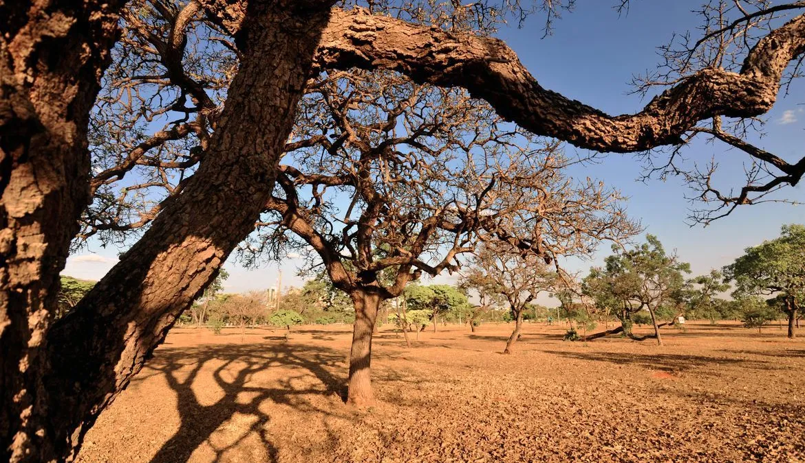

Fonte: Agência Brasil / Ministério do Meio Ambiente
O desmatamento na Amazônia Legal teve redução de 61,4% em maio deste ano, em relação ao mesmo mês de 2025. É a maior redução percentual de desmatamento já registrada na região. Foram 370 quilômetros quadrados de supressão de vegetação no mês passado, contra 960 quilômetros quadrados em maio de 2025.
Os dados do Sistema de Detecção de Desmatamentos em Tempo Real (Deter) foram divulgados, nesta quinta-feira (11), durante visita do presidente Luiz Inácio Lula da Silva ao Observatório Regional Amazônico (ORA) da Organização do Tratado de Cooperação Amazônica (OTCA), em Brasília.
Os números do Deter, gerados pelo Instituto Nacional de Pesquisas Espaciais (Inpe), orientam as equipes em campo para ações de combate ao desmatamento, especialmente do Instituto Brasileiro do Meio Ambiente e dos Recursos Naturais Renováveis (Ibama) e do Instituto Chico Mendes de Conservação da Biodiversidade (ICMBio).
O ministro do Meio Ambiente e Mudança do Clima, João Paulo Capobianco, explicou que a redução é um marco. Isso porque, historicamente, o desmatamento aumenta no mês de maio, início da estação seca na Amazônia.
“Nós monitoramos isso dia a dia com uma certa aflição. Com o Ibama indo a campo fazendo os embargos remotos, o ICMBio indo a campo impedindo o desmatamento em unidades de conservação federais e também agindo em terras indígenas e assentamentos, conseguimos esse feito fundamental”, disse o ministro.
Já a taxa anual de desmatamento é extraída do sistema do Projeto de Monitoramento do Desmatamento da Floresta Amazônica Brasileira por Satélite (Prodes), que vai de agosto de um ano a julho do ano seguinte. A expectativa, segundo Capobianco, é ter no próximo período, a ser consolidado em 31 de julho deste ano, o menor número final de desmatamento da história da Amazônia.
No período agregado de agosto de 2025 a maio de 2026, a queda no desmatamento foi de 37,5%, em relação a agosto de 2024/maio de 2025. A área desmatada no período foi de 2.189 quilômetros quadrados, também a menor da história.
“Isso mostra que o controle de desmatamento na Amazônia está funcionando”, disse Capobianco, citando ações anunciadas ontem pelo presidente Lula, em cerimônia pelo Dia Mundial do Meio Ambiente, celebrado em 5 de junho.
Entre os alertas de desmatamento do Deter, 37,1% foram em áreas regularizadas. Na Amazônia Legal, o desmatamento permitido em propriedades privadas é de 20% da área, de acordo com as regras do Código Florestal.
Já 21,3% dos alertas ocorreram em cima de floresta públicas não destinadas e 17,4% em áreas sem registro fundiário, ou seja, áreas de desmatamento ilegal.

O Inpe apresentou ainda os dados de alertas para o Cerrado, que apontam para uma tendência de queda no desmatamento no bioma. Em maio de 2026, houve redução de 12,2% no desmatamento, em relação a maio do ano passado.
Para o período agregado de agosto de 2025 a maio deste ano, a queda na supressão de vegetação foi de 8,2% em relação ao período anterior. Foram de 4.208 quilômetros quadrados de floresta desmatada.
No caso do Cerrado, 73,4% do desmatamento ocorreu em propriedades privadas já regularizadas. Nesse bioma, 65% das áreas podem ser desmatadas, ou seja, é um desmatamento legal do ponto de vista de autorização.
Acusação dos EUA
A persistência do desmatamento ilegal no Brasil é uma das alegações dos Estados Unidos para a imposição de tarifas adicionais a produtos brasileiros importados no país. No início deste mês, o Escritório do Representante Comercial dos Estados Unidos (USTR) sugeriu uma taxação punitiva de 25% diante de práticas brasileiras “irrazoáveis” e que “oneram ou restringem” o comércio estadunidense.
Na avaliação do USTR, mesmo o Brasil tendo um marco legal para combater desmatamentos ilegais, o país tem um histórico de falhas na sua aplicação eficaz.
O ministro João Paulo Capobianco ressaltou que os dados mostram o contrário. “O Brasil está agindo objetivamente e obtendo resultados comprovados pela pesquisa, pelos estudos científicos, de que a Amazônia está numa nova situação com controle ambiental, com resultados realmente muito positivos”, disse.
O presidente Lula reforçou que os Estados Unidos estão equivocados quando questionam as ações do Brasil contra o desmatamento. “Eles não sabem o trabalho que nós fazemos para fazer com que o desmatamento chegue a zero até 2030”, disse Lula sobre as metas brasileiras na área do meio ambiente e mudanças climáticas.
“Isso é uma decisão do nosso governo, é por uma questão de justiça e de participação do Brasil para ajudar o planeta Terra, cumprir com a nossa obrigação de tentar evitar o desmatamento o máximo possível e provando que o não-desmatamento é mais lucrativo do que o desmatamento”, acrescentou.
O ministro também classificou como inverdade a alegação de que o Brasil estaria exportando madeira de origem ilegal. “Toda a madeira exportada pelo Brasil é monitorada. Existe toda cadeia de custódia, com código de barras detalhado, tudo que é extraído no manejo florestal na Amazônia é devidamente acompanhado”, acrescentou.